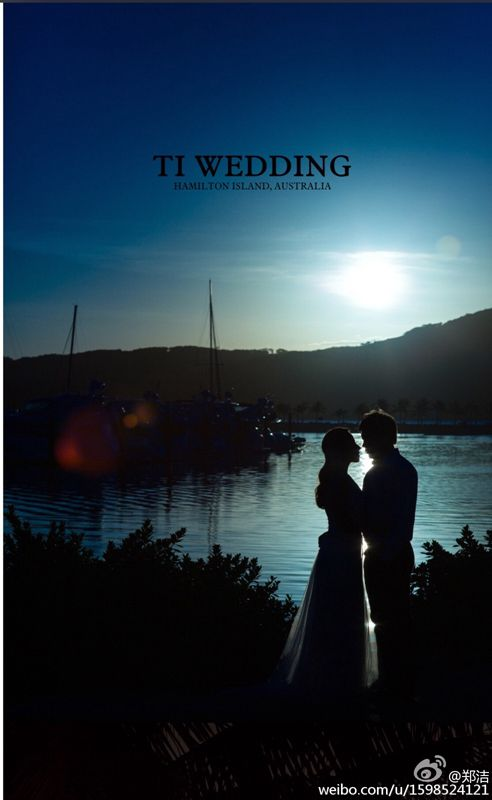
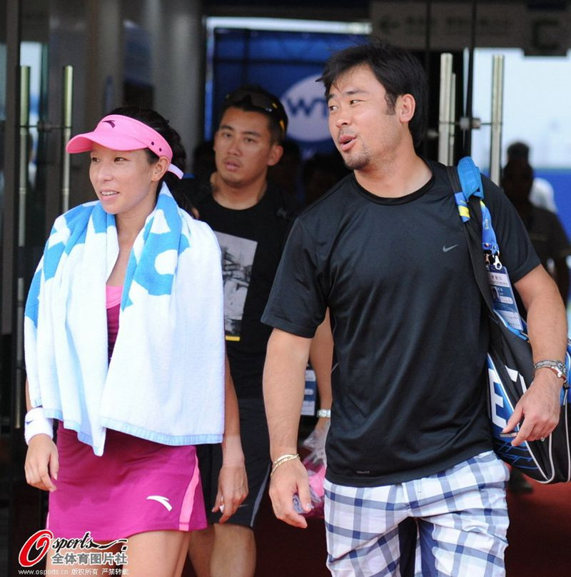

人民网北京4月27日电（杨磊） 27日下午，中国著名网球选手郑洁在自己的微博上晒出了与丈夫拍摄的婚纱照。她在微博中说：“好久好久没来新浪微博了！之前把密码都忘记了！今天找回密码，一上来看到上千条的留言，非常感动！这么久没来，大家还这么关心我！以后有时间一定会多来跟大家交流和互动的！为感谢大家的关心，特此在这里跟大家分享一下，澳网之后我和张宇在澳洲拍的婚纱照，以前因为比赛和训练结婚八年多了一直没有拍。”


2006年8月1日，郑洁同丈夫张宇领证结婚，婚后张宇开始担任郑洁的单打教练。2015年1月，郑洁透露即将补拍婚纱照，退役后考虑生子。